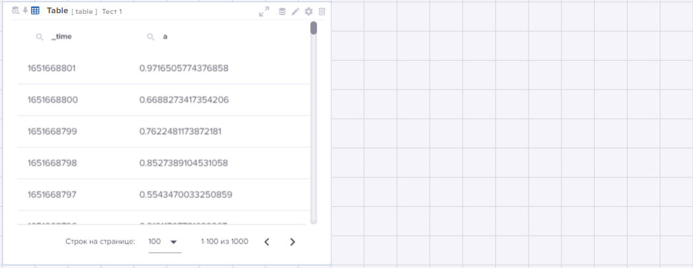

Введение в WDC.Платформу
WDC.Платформа – универсальная система сбора, аналитики и визуализации больших объемов машинных данных (machine-generated data), построенная на базе стека программных продуктов с открытым исходным кодом и компонентов собственной разработки.
Разработчик WDC.Платформы – российская компания ISG Neuro.
Ключевой особенностью WDC.Платформы является минимальный барьер входа для пользователей системы, что обеспечивает возможность использования самых современных технологий машинного обучения, аналитики больших данных и распределенной обработки информации с минимальными затратами на изучение этих технологий.
EVA – это web-интерфейс WDC.Платформы, предназначенный для визуализации результатов обработки большого объема данных (Big Data) и настройки логики взаимодействия между отдельными компонентами визуализации данных.
Работа ведётся на интерактивной информационно-аналитической панели – дашборде.
Дашборд – совокупность интерактивных компонентов визуализации данных и логики взаимодействия между ними.
Данные на дашборд загружаются на основе подготовленных пользователем запросов – источников данных.
Источник данных – сформированный пользователем запрос к данным, визуальное представление которых он хочет получить на дашборде. Запрос создаётся пользователем на высокоуровневом языке OTL.
Данные, выбранные с помощью источников данных, отображаются в визуализациях.
Визуализации – интерактивные компоненты визуализации данных различных типов, размещённые на дашборде.
EVA поддерживает компоненты двух типов:
-
Компоненты отображения данных:
-
Таблица
-
Мультилинейный график
-
Точечный график
-
Частотный график
-
Карта
-
Изображение
-
Конструктор схем
-
Кустовая схема
-
Граф
-
Плитка
-
Диаграмма Гантта
-
Тепловая карта
-
Круговая диаграмма
-
Круговая шкала
-
Ползунок
-
Накопитель
-
Число
-
Показатели
-
-
Компоненты, реализующие логику взаимодействия между пользователем и компонентами отображения данных:
-
Выпадающий список
-
Выбор времени
-
Кнопка
-
Текстовый блок
-
Меню
-
Динамическая форма
-
Динамические визуализации
-
Токен – внутренняя переменная для дашборда, значение которой присваивается в зависимости от действий пользователя.
Токены используются:
-
в источниках данных – для фильтрации данных, передаваемых на дашборд, и получения таким образом в интерактивных компонентах новых данных;
-
в событиях – как для модификации отображения данных в интерактивных компонентах, так и для модификации свойств самих интерактивных компонентов.
Событие – логика взаимодействия между компонентами визуализации данных, реализуемая в ответ на действие пользователя.
Место EVA в общей схеме компонентов WDC.Платформы

WDC.Платформа является универсальной системой сбора, аналитики и визуализации больших объемов машинных данных (machine-generated data).
В её состав входит ряд компонентов, специализирующихся на выполнении определённых функций:
-
Извлечение-Преобразование-Загрузка.
Apache Nifi
В систему поступают разноформатные данные. С помощью Apache Nifi они обрабатываются, приобретают единую структуру и получают необходимые атрибуты для дальнейшего использования.
-
Хранилище данных.
GlusterFS
Первоначально обработанные данные поступают в хранилище GlusterFS. Информация размещена в распределенном и реплицированном виде для обеспечения надежного хранения и отказоустойчивости системы:
-
индексированные данные – индексы;
-
оперативные данные для быстрого доступа – кэш; оперативные данные за время, заданное в EVA, и результаты поисковых запросов.
-
Обработка данных.
Apache Spark
Приложение Apache Spark выполняет параллельную обработку данных на основании полученных из Базы данных поисковых запросов и выгружает запрошенные данные в кэш Хранилища данных.
-
База данных.
PostgreSQL
База данных обеспечивает обмен служебными сообщениями между приложениями Apache Spark и OT-Rest, проводит аудит поисковых запросов и хранит всю информацию об инструментах визуализации приложения EVA.
-
Взаимодействие пользовательского интерфейса и серверной части
ОТ.REST
ОТ.REST осуществляет предварительную обработку поисковых запросов и передаёт их на дальнейшую обработку в приложение Apache Spark. Данные, подготовленные по запросам, перемещает из Хранилища в EVA для визуализации.
-
Визуализация данных.
EVA
Интерактивная среда разработки EVA позволяет разрабатывать и выполнять запросы к различным источникам данных, обрабатывать и визуализировать данные.
EVA создаёт Локальное хранилище на компьютере пользователя для оперативного хранения используемых им инструментов EVA (дашбордов и проч.).
Функциональные модули EVA
В EVA могут быть предоставлены для работы следующие модули:
-
Конструирование дашбордов – инструмент предназначен для разработки и использования сложных интерактивных дашбордов, позволяющих визуализировать данные в различных форматах представления.
-
Исследование данных – инструмент для отладки запросов к данным. С его помощью Вы можете создавать запросы, отлаживать их и визуализировать результаты выполнения в различных интерактивных компонентах.
С подробным описанием всех модулей EVA, технологии работы ними, а также экранных форм модуля “Конструирование дашбордов” с детальным описанием полей и набора поддерживаемой функциональности Вы можете ознакомиться в Руководстве пользователя “EVA”.
Начало работы
Перед тем, как приступить к работе в EVA, убедитесь, что:
-
Данные для Вашей работы загружены в Хранилище данных.
-
Вам предоставлен доступ к EVA.
После входа в EVA на Главной странице Вы увидите Главную панель :
По клику на иконке  справа
откроется меню "Профиль":
справа
откроется меню "Профиль":

Рассмотрим инструменты подробнее:
-
 – режим управления
доступом пользователей:
– режим управления
доступом пользователей:-
пользователь с привилегией admin_all имеет права на выполнение этого действия для всех пользователей EVA;
-
пользователь с другим уровнем доступа может просматривать информацию о предоставленных ему правах и редактировать свой пароль.
-
-
 – режим выбора имеющейся
темы оформления EVA, а также создания новой темы, её редактирования и
удаления.
– режим выбора имеющейся
темы оформления EVA, а также создания новой темы, её редактирования и
удаления. – после нажатия на эту
иконку на экране появится окно, предназначенное для настройки своей темы.
– после нажатия на эту
иконку на экране появится окно, предназначенное для настройки своей темы.Под полем Название темы находится Руководство, в котором приведён перечень элементов EVA, для которых предусмотрена цветовая настройка.
Также предусмотрена возможность загрузки фонового изображения и настройки степени его прозрачности.
Если в Вашем распоряжении есть готовая тема, то её можно загрузить из файла, кликнув по иконке .
Созданную Вами тему в дальнейшем можно редактировать и удалить.

-
 – выход из программы и
предоставление возможности вернуться, например, под другим идентификатором
пользователя.
– выход из программы и
предоставление возможности вернуться, например, под другим идентификатором
пользователя.
Кроме того, обратите внимание на информационную составляющую – система выводит на заголовок вкладки браузера названия модулей и дашбордов, с которыми Вы работаете, а также сохраняет ссылки на них в истории браузера.
А теперь начнём знакомство с модуля EVA "Исследование данных".
Исследование данных
Рассмотрим функциональные возможности модуля "Исследование данных" подробнее.
Область поиска данных предназначена для ввода запроса к данным и выполнении по запросу поиска данных за фиксированный период времени.
Период времени можно задать в раскрывающемся списке, расположенном слева от кнопки "Поиск". По умолчанию определён период "За всё время".
Окно поиска, предназначенное для формирования запроса, можно настроить. Для этого под окном поиска размещён раскрывающийся список "Настройки поиска", в котором задаются:
-
автоматический перенос вводимого текста запроса на следующую строку при активном переключателе "Автоперенос на новую строку";
-
количество строк, видимых в окне.
Для формирования запроса используется высокоуровневый язык OTL. Все команды – подробное описание, синтаксис и примеры использования в запросах – представлены в Руководстве "Команды языка OTL".
Ниже мы остановимся только на базовом наборе команд и разберём пошагово процедуру создания запросов с их использованием.
Подготовленный запрос запускается на выполнение по кнопке "Поиск" или сочетанию клавиш [Ctrl+Enter].
Имеется возможность вывести для работы в окно поиска ранее введённые запросы, для этого следует воспользоваться кнопкой "Шаг назад" необходимое количество раз, для возврата к более новым запросам используется кнопка "Шаг вперёд".
Для удаления запроса и отображённых данных используется кнопка "Сбросить".
Область просмотра результата выполнения поиска. В ней активна следующая функциональность:
-
События – просмотр результатов выполнения поиска:
-
поля данных, участвующих в запросе – перечень идентификаторов с указанием их типов выводятся слева автоматически после выполнения запроса;
-
значения поля данных, количество и процент их повторений – эта информация выводится по полю, выбранному с помощью "мыши".
-
-
Статистика – данные выводятся в табличном виде.
-
Визуализация – здесь можно изменить представление полученных данных, кликнув на иконку с нужным для работы интерактивным компонентом. После чего результаты будут интерпретированы в выбранный Вами формат визуализации данных.
-
Отчет – формирование отчёта.
-
Скачать – скачивание сформированного отчёта в предпочтительном формате – xlsx или csv.
Настройки для запроса заданы по умолчанию. Просмотреть и изменить их можно по копке . Среди настроек доступны универсальные настройки (основные и дополнительные) и уникальные настройки, используемые для интерактивных компонентов конкретных видов.
Создание запроса к данным
Запрос состоит из серии команд.
Команды пишутся последовательно и отделяются друг от друга конвейером (|).
Примечание.
По горячей клавише Ctrl+\ текст, начинающийся с "|", будет перенесён на новую строку.
Данные, полученные при выполнении команды, являются исходными данными для следующей команды.
Для начала достаточно загрузить весь набор данных, с которыми Вы будете работать. Для этого в запросе используйте команду загрузки данных с указанием в запросе индекс-папки с нужными данными.
| otstats ...
Данные будут загружены в EVA и отобразятся в нижней области в виде таблицы, т.к. этот компонент визуализации настроен для отображения по умолчанию.
Далее Вы, уточняя условия вывода данных, последовательно, команда за командой, создаёте запрос, запускаете его на выполнение с помощью кнопки и оперативно получаете промежуточные результаты.
В процессе выполнения запроса могут возникнуть проблемы. В этом случае процесс будет остановлен, и подсветится иконка лог-журнала , расположенная справа в Основной панели EVA. В лог-журнале Вам будет доступна для просмотра вся последовательность действий, выполняемых системой по запросу.
Ниже остановимся подробнее на базовых командах языка OTL, позволяющих создавать простые запросы к данным.
Базовые команды языка OTL для запросов
Команды языка OTL, которые достаточно освоить на начальном этапе разработки запросов:
| otstats | Загружает данные из индекса. |
|---|---|
| eval | Создаёт новое поле и заполняет его вычисленными значениями. |
| fields | Отображает только указанные поля. Синоним команды table. |
| head | Отображает заданное количество первых записей запроса. |
| rename | Переименовывает одно или несколько полей. |
| search | Выполняет поиск и фильтрацию данных. |
| sort | Сортирует данные по одному или нескольким полям. |
| stats | Применяет агрегирующую функцию к полю. |
| table | Отображает только указанные поля. Синоним команды fields. |
| timechart | Агрегирует результаты по времени. |
| where | Отфильтровывает записи согласно заданным условиям. |
Рассмотрим их подробнее на примерах.
Пример 1
Исходные данные:
Имеются данные о работе устройств в установках нефтеперерабатывающего завода.
Исходные данные размещены в индексе devices_d.
Запрос:
Подготовить данные о работе насоса марки "н-102" с метрикой "We": определить 5 дней, в которые для него зафиксировано максимальное число выходов показателя виброускорения на подшипнике maxval за допустимый предел tpm_max, и разместить эти записи в порядке убывания числа выходов.
| otstats index=devices_d
| rename signes as metric
| search device="н-102" AND metric="We"
| fields _time, maxval, tpm_max, device, metric
| eval isAlert = if(maxval > tpm_max, 1, 0)
| timechart span=1d sum(isAlert) as alert_number
| sort -alert_number
| eval time = strftime(_time, "%Y-%m-%d")
| table time, alert_number
| head 5
Расшифровка запроса построчно:
| 1. | Загрузить данные из индекса devices_d: | otstats |
|---|---|---|
| | otstats index=devices_d |
| 2. | Переименовать поле signes в более понятное metric: | rename |
|---|---|---|
| | rename signes as metric |
| 3. | Найти насосы марки "н-102" и метрикой "We": | search |
|---|---|---|
| | search device="н-102" AND metric="We" |
| 4. | Выбрать поля для использования в запросе: | fields |
|---|---|---|
| | fields _time, maxval, tpm_max, device, metric |
| 5. | Создать новое поле isAlert и поместить в него "1", если для насоса показатель виброускорения maxval вышел за допустимый предел tpm_max , и "0", если – нет: | eval |
|---|---|---|
| | eval isAlert = if(maxval > tpm_max, 1, 0) |
| 6. | Подсчитать количество выходов показателя за допустимый предел по суткам (сумма значений в поле isAlert) и полученный результат поместить в поле alert_number: | timechart |
|---|---|---|
| | timechart span=1d sum(isAlert) as alert_number |
| 7. | Отсортировать результаты по полю alert_number в порядке убывания: | sort |
|---|---|---|
| | sort -alert_number |
| 8. | Преобразовать значения поля _time в формат "%Y-%m-%d" и записать его в поле time: | eval |
|---|---|---|
| | eval time = strftime(_time, "%Y-%m-%d") |
| 9. | Отобрать дату time и количество выходов показателя за допустимый предел alert_number в указанный период: | table |
|---|---|---|
| | table time, alert_number |
| 10. | Отобразить 5 первых записей (т.е. записей с наибольшим превышением допустимого показателя в указанную дату): | head |
|---|---|---|
| | head 5 |
Пример 2
Исходные данные:
Те же.
Запрос:
Отобразить максимальное значение показателя виброускорения на подшипнике maxval метрики signes "We" отдельно по каждому устройству device.
| otstats index=devices_d
| where signes="We"
| stats max(maxval) as max_value by device
Расшифровка запроса построчно:
| 1. | Загрузить данные из индекса devices_d: | otstats |
|---|---|---|
| | otstats index=devices_d |
| 2. | Отобрать записи с метрикой "We": | where |
|---|---|---|
| | where signes="We" |
| 3. | Вывести максимальное значение показателя maxval в поле max_value для каждого типа устройств device: | stats |
|---|---|---|
| | stats max(maxval) as max_value by device |
Итак, мы познакомили Вас с базовыми командами языка OTL и дали подробную инструкцию по их использованию при составлении запросов.
Дальнейшее изучение команд языка Вы можете продолжить самостоятельно в Руководстве "Команды языка OTL", где представлен весь набор применяемых команд, их подробное описание и примеры использования.
Конструирование дашбордов
В модуле "Исследование данных" удобно вести отладку запросов к данным, просматривать результаты их выполнения в отдельных интерактивных компонентах.
Модуль "Конструирование дашбордов" предназначен для реализации комплекса мероприятий по разработке дашбордов и визуализации данных в различных форматах представления с широкими интерактивными возможностями.
Этапы конструирования дашборда:
Панель инструментов дашборда
На странице работы с дашбордом имеется Панель инструментов, которая состоит из 4х блоков.
Рассмотрим их подробнее слева направо (описание см. ниже):
-
Блок управления.
-
Блок инструментов дашборда.
-
Блок настройки дашборда.
-
Блок управления профилем пользователя.
1. Блок управления.
Блок включает:
-
Название дашборда.
-
Инструменты перехода:
– в режим представления "Дерево", где все группы будут выведены слева, а в группе, с которой Вы непосредственно работаете, будут доступны все, включённые в неё дашборды;
 – на Главную страницу EVA;
– на Главную страницу EVA;– предыдущую страницу, с которой Вы работали.
2. Блок инструментов дашборда.
Блок доступен только в Режиме редактирования. В него включены иконки, активирующие:
Примечание.
Любой используемый инструмент будет деактивирован при повторном нажатии на его иконку.
-
– Загрузку svg-файла.
Svg-файл загружается на сервер и впоследствии может быть задействован на компонентах, для которых предусмотрено использование svg-изображений (Csvg, Map).
-
 – События (event).
– События (event).События происходят по определенному действию на компонентах визуализации.
-
 – Токены.
– Токены.Токены обеспечивают интерактивность отображения данных на компонентах визуализации.
-
 – Источники данных (или
запросы к данным).
– Источники данных (или
запросы к данным).Здесь определяются весь предполагаемый к использованию набор источников данных, которые затем могут быть назначены нескольким интерактивным компонентам, обеспечивая тем самым различные формы представления данных на дашборде.
Для каждого источника предусмотрены кнопки запуска, редактирования, запуска по расписанию, экспорта в файл, формирования отчётов и удаления.
-
 – Выбор доступных
компонентов визуализации.
– Выбор доступных
компонентов визуализации.
3. Блок настройки дашборда:
-
 – Инструмент управления
фильтрами.
– Инструмент управления
фильтрами.Инструмент для настройки фильтров и фильтрации табличных данных.
-
 – Иконка активирует Окно
настроек режимов дашборда:
– Иконка активирует Окно
настроек режимов дашборда:-
Режим редактирования – управляет:
-
Доступом к Блоку инструментов дашборда и их использованию.
-
Доступом к набору инструментов и служебной информации на Панелях компонентов визуализации (за исключением имени компонента, которое отображается всегда) и их использованию.
-
Видимостью компонента визуализации, для которого настройка visible = false.
-
Доступом к режимам обслуживания вкладок: добавлять вкладки на дашборд, корректировать названия вкладок, удалять вкладки с дашборда.
Пример дашборда с включенным Режимом редактирования (переключатель в положении: да) представлен на рисунке ниже:

А на следующем рисунке приведён пример с ограниченным функционалом за счет отключения Режима редактирования (переключатель в положении: нет):

Кроме того, обратите внимание, на дашборде отображён только один интерактивный компонент, для второго компонента настройка visible = false, поэтому он был скрыт.
-
-
Режим использования сетки на дашборде: установка размера сетки и управление отображением сетки.
-
Режим изменения размера и положения компонента.
Если режим включен (да, по умолчанию), то при клике левой кнопкой "мыши" у Вас будет возможность перемещать компонент визуализации по полю дашборда и менять его размер.
Если режим отключен (нет), компоненты фиксируются на дашборде. Сохранение положения всех элементов и их размеры будет происходить только после отключения этого режима.
-
Режим вкладок.
При отключенном Режиме вкладок (нет, по умолчанию) Панель вкладок будет скрыта, для работы доступна только первая вкладка.
Если Режим вкладок включен (да), но Режим редактирования отключен, то Панель вкладок будет отображена в нижней части экрана, а вкладки доступны только для просмотра.
Если Режим вкладок включен при активном Режиме редактирования, то в Панели вкладок будут доступны следующие действия:
-
 – добавлять новые
вкладки;
– добавлять новые
вкладки; -
 – корректировать
названия вкладок;
– корректировать
названия вкладок; -
 – удалять вкладки;
– удалять вкладки; -
рабочие области вкладок будут доступны для изменения.

По умолчанию после открытия дашборда для работы будет предоставлена первая вкладка.
-
-
-
 – Сохранение дашборда на
сервере.
– Сохранение дашборда на
сервере.Следует иметь в виду, что сохраняется структура дашборда, размер и место размещения всех компонентов визуализации, токены, текст событий и текст запросов к данным. Однако, результаты запросов не сохраняются. Следовательно, при открытии дашборда запросы запускаются на выполнение автоматически.
-
 – просмотр log-журнала.
– просмотр log-журнала.
4. Блок управления профилем пользователя.
 – Доступ к Меню
профиля.
– Доступ к Меню
профиля.
Теперь перейдём к поэтапному процессу разработки дашборда.
Создание дашборда
Работа начинается с создания дашборда, на котором Вы хотите скомпоновать аналитическую информацию по нужной Вам тематике.
В модуле предусмотрена группировка дашбордов, поэтому на основной странице
модуля во вкладке "Группы" выберите группу, в которой Вы хотите разместить новый
дашборд. Будет активирована вкладка "Дашборды", здесь нажмите иконку
 .
.
В открывшемся окне задайте имя нового дашборда.
Если дашборд должен быть доступен в нескольких группах, то определите их в разделе "Управление группами" и подтвердите "Добавить группу дашборду".
Завершите процедуру нажатием кнопки "Создать" для продолжения работы.
В одном дашборде предусмотрена возможность создания нескольких рабочих областей
на отдельных вкладках. Для этого необходимо активировать Режим использования
вкладок (переключатель Вкладки) в Окне настроек режимов
дашборда. После чего в нижней части экрана появится Панель
вкладок, и первая рабочая область будет размещена в первой вкладке "Без
названия", имя для которой можно задать после нажатия на иконке
. Остальные вкладки создаются по
нажатию на иконку .
Последовательность размещения вкладок на дашборде можно менять, используя
инструмент "drag-and-drop". Удаление ненужной вкладки выполняется с помощью
иконки .
Создание источников данных
Запросы прикрепляются к дашборду, это позволяет использовать одни и те же источники данных для различных компонентов визуализации.
В запросе определяется источник, из которого будут загружены данные в интерактивный компонент, набор и формат отображаемых данных.
На Панели инструментов дашборда после нажатия иконки будет открыто окно для создания запросов к данным – источников данных.
По кнопке "Создать" или  откроется окно создания источника данных, в котором Вы вводите имя источника
данных и текст запроса на языке OTL. Этих данных будет достаточно для создания
запроса.
откроется окно создания источника данных, в котором Вы вводите имя источника
данных и текст запроса на языке OTL. Этих данных будет достаточно для создания
запроса.
При необходимости воспользуйтесь дополнительными настройками источника данных:
-
В полях "Временной интервал: начало" и "Временной интервал: конец" определяются начало и окончание отрезка времени, за который нужно выгрузить и обработать данные.
-
Дополнительные параметры обычно свернуты. Их меняют крайне редко.
-
Максимально возможное количество выводимых в визуальных компонент результатов (поле "Максимальное кол-во строк"). По умолчанию оно составляет – 1000 записей.
Важно!
Эта настройка будет проигнорирована, если в запросе используется команда head, которая и будет определять количество выводимых данных.
-
Автоматический запуск источника данных при загрузке установлен по умолчанию. Если в этом нет необходимости, снимите отметку.
После нажатия на кнопку "Создать" источник данных будет создан и добавлен в список источников данных.
При необходимости отладку запроса можно выполнить в модуле программы "Исследование данных", открытом параллельно на другой вкладке браузера. А сюда перенести уже готовый запрос.
Размещение компонентов визуализации данных на дашборде
В Панели инструментов дашборда по нажатию на иконку
будет представлен перечень
всех компонентов визуализации данных.
С помощью механизма "drag and drop" переместите нужный Вам компонент на полотно дашборда, воспользовавшись левой кнопкой "мыши".
После чего он появится на дашборде в размерах, заданных в настройках по умолчанию. При необходимости Вы можете их изменить – если щёлкните левой кнопкой "мыши" на компоненте сразу же после создания, то по его контуру появится пунктирная рамка режима изменения размера и положения.
Также на Панели управления визуализации Вам будут доступны режимы переименования, изменения настроек и удаления компонента.
Часто данные, содержащиеся в индексах, требуют приведения их к виду, удобному для выполнения анализа. Поэтому, обычно данные сначала загружают в Таблицу для просмотра и затем проводят необходимые преобразования посредством доработки прикреплённых к ним запросов.
Наполнение компонента визуализации данными
В поле "Выберите источник данных" определите, какой источник данных Вы хотите использовать для заполнения созданной визуализации, выбрав его из списка имеющихся на дашборде, и подтвердите сделанный выбор.
В результате, с случае успешного выполнения выбранного запроса, данные будут отображены в заданном формате визуализации.
Все действия, выполняемые по запросу, фиксируются в лог-журнале. И, если при выполнении запроса будут обнаружены ошибки, процесс будет остановлен, и подсветится иконка лог-журнала на Панели инструментов дашборда. Кликните на ней, чтобы ознакомиться с возникшей проблемой.
Решить её можно здесь же, отредактировав запрос в окне "Источник данных" – на
Панели инструментов дашборда по иконке
вызвать список запросов и
открыть нужный в режиме редактирования по кнопке
 . Однако, удобнее отладку запроса
выполнять в модуле программы "Исследование данных", открытом параллельно на
другой вкладке браузера. А сюда перенести уже готовый запрос.
. Однако, удобнее отладку запроса
выполнять в модуле программы "Исследование данных", открытом параллельно на
другой вкладке браузера. А сюда перенести уже готовый запрос.
Сохранение дашборда на сервере
В процессе настройки дашборда вся информация о составляющих дашборда сохраняется в Локальном хранилище браузера на Вашем компьютере. Время хранения этой информации ограничено продолжительностью работы компьютера.
Для сохранения дашборда и всех его составляющих в системе воспользуйтесь иконкой
на Панели инструментов
дашборда.
В результате будет сохранена структура дашборда, размер и место размещения всех компонентов визуализации, токены, текст событий и текст запросов к источникам данных.
Однако, результаты запросов не сохраняются.
Следовательно, при очередном входе в программу или переходе на другое рабочее место запросы будут запущены на выполнение автоматически.
Доработка источников данных
Если Вы уже освоили предыдущий уровень работы в EVA, тогда идём дальше.
Выбираете для работы ранее созданный дашборд.
После чего в системе будут выполнены проверки:
-
проверка выбранного дашборда в серверной части системы;
-
если Вы ранее уже работали с дашбордом, то будет выполнено сравнение версий дашборда на сервере и в Локальном Хранилище. Если версии отличаются, Вам будет предложено обновить локальный дашборд.

Далее, после выбора дашборда будут активированы необходимые для работы источники данных. В случае наличия в Хранилище более свежих данных и после успешной обработки они будут отображены взамен устаревших.
Важно!
Если запрос отработал с ошибкой, то:
-
в Таблицах, Мультилинейных графиках и Числах, для которых настройка lastResult=true, будут отображены данные, подготовленные в предыдущий сеанс работы с дашбордом и сохранённые в Базе данных, а на Панели инструментов этих компонентов останется иконка
 .
. -
Для Таблиц, Мультилинейных графиков и Чисел с настройкой lastResult=false, а также для остальных интерактивных компонентов будет выведен ошибочный результат.
Автоматический запуск запросов к источникам данных можно настроить в Планировщике после нажатия кнопки .
Пора расширить набор возможностей по интерактивному отображению данных на дашбордах. Перейдём к рассмотрению использования:
Использование токенов в запросах
Использование токенов обеспечивает интерактивность отображения данных на компонентах визуализации.
Токены принимают свои значения в зависимости от действий пользователя и, обеспечивая таким образом в запросах фильтрацию данных, позволяют получить в интерактивных компонентах новые данные.
Токены создаются в рамках дашборда. Для создания и редактирования токена
активируйте иконку  на Панели
инструментов дашборда.
на Панели
инструментов дашборда.
Рассмотрим работу механизма токенов на примере использования интерактивных компонентов логики, а именно:
-
Кнопка.
-
Выпадающий список.
-
Текстовый блок.
-
Выбор времени.
Использование Кнопки для выполнения запросов
При необходимости механизм токенов позволяет запускать запросы к данным на выполнение только после нажатия интерактивного компонента "Кнопка".
Для этого выполните следующие действия:
-
Создайте необходимые для работы запросы к данным, и разместите на дашборде интерактивные компоненты для вывода данных.
-
Создайте токен:
-
в поле "Элемент" укажите интерактивный компонент, данные в котором должны обновляться по Кнопке,
-
в поле "обновлять по кнопке" установить отметку.
-
Добавьте в запрос команду search с токеном, которая будет инициировать обновление данных в интерактивном компоненте. Токен должен быть заключён в символы доллара ($).
Например, запрос на обновление данных в таблице table по Кнопке, для которой задан токен token_table:
| makeresults count=100
| streamstats count as x
| search x=$token_table$ -
Поместите на дашборд компонент "Кнопка".
-
Оформите кнопку в нужном формате, используя уникальные настройки:
-
color – задаёт цвет текста кнопки;
-
backgroundcolor – определяет цвет фона кнопки;
-
name – выводит надпись на кнопке;
-
fontSize – задаёт размер шрифта надписи на кнопке;
-
underline – подчеркивает надпись на кнопке.
-
Установите настройке Submit, которая управляет запуском запросов на выполнение по кнопке, значение true.
-
Сохраните все установленные настройки Кнопки.
В результате после нажатия на интерактивную кнопку данные в визуальных компонентах будут обновлены.
Использование Выпадающего списка
Возможность оперативно менять набор анализируемых данных в интерактивных компонентах визуализации обеспечивают "Выпадающий список" и механизм токенов.
Для этого среди исходных данных должен присутствовать массив, в котором установлено соответствие между идентификаторами анализируемых данных и записями формируемого выпадающего списка.
Кроме того, в запросе, прикреплённом к интерактивному компоненту визуализации данных, должен быть задан токен, в который будет подставляться набор значений из выпадающего списка.
Далее действуйте в соответствии с указанной последовательностью по настройке выпадающего списка:
-
На дашборд поместите компонент "Выпадающий список".
-
При необходимости настройте (
 ) количество строк в
Выпадающем списке, доступных для выбора (опция multiple):
) количество строк в
Выпадающем списке, доступных для выбора (опция multiple):-
multiple=false (значение по умолчанию) – список может содержать только одну строку,
-
multiple=true – список будет состоять из множества строк.
-
-
Установите соответствие между данными и записями списка:
-
Данные для отображения – набор данных, из которых будет сформирован выпадающий список;
-
Связанные данные – данные, которые будут подставляться в токен в процессе выполнения запроса и отображаться на компоненте визуализации.
-
-
Из сформированного списка отберите одну или несколько строк (зависит от опции multiple), которые будут переданы в токен.
-
Создайте токен, который будет позже подставлен в запрос, с параметрами:
-
Элемент – идентификатор Выпадающего списка,
-
Действие – change,
-
Префикс, Суффикс, Разделитель – по необходимости.
-
-
Подставьте токен в запрос, прикреплённый к компоненту визуализации данных. Токен должен быть заключён в символы доллара ($).
Например: $tkn_select$.
В результате на компоненте визуализации будут отображены данные, отобранные по заданным в списке значениям. Например, Мультилинейный график будет содержать линии, построенные только по метрикам, выбранным в выпадающем списке.
Использование Текстового блока
Текстовый блок также используется механизмом токенов в качестве текстовых заготовок для запросов.
Для этого:
-
На дашборд поместите интерактивный компонент "Текстовый блок".
-
В текстовом поле напишите часть запроса или значение токена и нажмите на кнопку "Подтвердить". После чего подготовленный текст будет сохранён в качестве параметра компонента.
-
Для этого компонента создайте токен с параметрами:
-
Элемент – идентификатор Текстового блока,
-
Действие – accept.
-
-
Подставьте токен в запрос. В этом случае он должен быть заключён в символы доллара ($). Например: $tkn_textarea$.
Использование Текстового блока активируется кнопкой
 , если настройка searchBtn =
true. По умолчанию (searchBtn=false) кнопка отсутствует.
, если настройка searchBtn =
true. По умолчанию (searchBtn=false) кнопка отсутствует.
Для Текстового блока предусмотрены настройки видимости.
Использование Выбора времени
Ещё один компонент, который удобно применять через механизм токенов, это – Выбор времени.
Он предназначен для выбора интервала времени.
Компонент использует для работы служебное поле _time.
Для этого:
-
На дашборд добавьте компонент
 "Выбор времени".
"Выбор времени". -
Создайте для этого компонента один или два токена (в зависимости от настроенного формата) с параметрами:
-
Элемент – идентификатор компонента "Выбор времени",
-
Действие – select,
-
Свойство:
-
start – для передачи в запрос начального значения временного интервала,
-
end – для передачи в запрос конечного значения временного интервала.
-
-
-
Подставьте в запрос подготовленные токены, заключенные в символы доллара ($), используя команду search.
Например, для отображения данных за период следует указать:
| search _time>=$tkn_start$ AND _time<=$tkn_end$
Для ограничения визуализации данных временным интервалом на компоненте "Выбор времени" раскройте панель "Выберите дату и время" и определите временные характеристики одним из предложенных способов:
-
Укажите количество часов, минут, секунд, которые прошли от требуемого значения до текущего времени.
-
Задайте начальное или конечное значение даты и времени в окне выбора даты и времени.
-
Определите временной диапазон путём задания начальной и конечной даты в окне выбора даты и времени.
-
Введите дату и время вручную в формате Epoch time.
После подтверждения заданных значений клавишей "Установить" появится информационная строка с выбранным диапазоном.
После чего отработают запросы с прописанными токенами. И в результате на компонентах визуализации, к которым прикреплены отработавшие запросы, данные будут представлены за заданный интервал времени.
Использование токенов в названиях визуальных компонентов
Часто на дашборде используются взаимосвязанные интерактивные компоненты, когда один компонент содержит обобщающие данные, а на второй компонент выводится детальная информация только по одному элементу, выбранному на первом компоненте.
В EVA есть возможность установить визуальную связь второго компонента с
элементом, выбранным на первом интерактивном компоненте, задействовав в названии
значение токена, использованного для отбора данных. Для этого следует
активировать режим редактирования по иконке
 на Панели инструментов второго
компонента и к имени добавить этот токен, заключив его в символы "$",
например: "Дебиты скважины $tknWell$".
на Панели инструментов второго
компонента и к имени добавить этот токен, заключив его в символы "$",
например: "Дебиты скважины $tknWell$".
Использование событий
В EVA предусмотрена настройка взаимодействия между компонентами визуализации данных, реализуемая в ответ на действие пользователя. В этом случае действие пользователя регламентируется событием.
Окно для настройки событий открывается при нажатии иконки
 на Панели инструментов дашборда.
на Панели инструментов дашборда.
В настоящее время реализованы следующие события:
-
Событие изменения свойства компонента (onclick … set).
Нажатие на область 1го визуального компонента приведёт к изменению характеристики 2го компонента.
-
Событие заполнения отчёта по запросу (onclick … changeReport).
По нажатию на интерактивном компоненте данные из запроса будут перенесены в отчёт.
-
Событие перехода на другой дашборд (onclick … go).
Событие с расширенным набором параметров используется для интерактивных компонентов:
-
Изображение (Csvg).
-
Тепловая карта (Heatmap).
-
Плитка (Tile).
-
Карта (Map).
Событие с использованием токенов.
При выполнении события будет выполнен переход на другой дашборд с последующим изменением значения одного или нескольких токенов.
-
Событие перехода на другой дашборд по Ctrl (onctrlclick … go).
Событие идентично предыдущему событию с той лишь разницей, что для его выполнения должна быть нажата клавиша [Ctrl].
-
Событие сравнения значений токена (OnTokenCompare...set).
В этом событии используется токен.
В случае выполнения условия сравнения токена с заданным значением будет выполнена модификация характеристики визуального компонента и отображения на нём данных.
-
Событие сравнения данных Таблицы (OnDataCompare...set).
Цветовое выделение элементов визуального компонента Таблица (столбцов, строк, ячеек) в выбранный цвет при выполнении заданного условия.
Подробное описание синтаксиса событий представлено ниже.
Событие изменения свойства компонента (onclick … set)
onclick(<visual1>,<area>,set(<visual2>,<char>,<char_val>)), где:
-
visual1 – идентификатор первого интерактивного компонента, в котором будет выполнено действие пользователя (идентификатор выведен на панели компонента в квадратных скобках);
-
area – область на первом компоненте, нажатие на которую приведёт к изменению характеристики второго компонента (необязательный параметр);
-
visual2 – идентификатор второго интерактивного компонента, у которого нужно изменить настройку;
-
char – настройка второго компонента, которую необходимо изменить;
-
char_val – значение, которое будет назначено настройке второго компонента.
Пример.
При нажатии на точку на Линейном графике отобразить Таблицу.
При нажатии (onclick) кнопкой "мыши" в Линейном графике lineChart на точку point установить (set) для Таблицы table настройку видимости visible в позицию true.
onclick(lineChart,point,set(table,visible,true))
Событие заполнения отчета (onclick...changeReport)
onclick(<visual>, changeReport(<req>,<templ_rep>)), где
-
visual – идентификатор интерактивного компонента, на котором следует нажать левую кнопку "мыши" для выполнения события;
-
req – название запроса, данные из которого будет внесены в отчёт;
-
templ_rep – имя файла шаблона, на основе которого будет сформирован отчёт.
После выполнения события будет сформирован файл отчёта или архив, если отчётов несколько.
Пример.
При клике (onclick) "мыши" на кнопку button-2 сформировать отчёт (changeReport) на основании данных из запроса sid-2 и шаблона testreport.xlsx.
onclick(button-2, changeReport(sid-2,testreport.xlsx))
Событие перехода на другой дашборд (onclick … go)
onclick(<visual>,go(<dash>,<tknVisual>[,<tab>][,[<val>],[<token>]]))
Важно!
Для одного интерактивного компонента можно использовать только одно событие вида (onclick … go). В противном случае система будет работать нестабильно.
Событие перехода на другой дашборд используется для следующих интерактивных компонентов:
-
Изображение (Csvg).
Переход из Изображения выполняется по клику левой кнопкой "мыши" в любом месте компонента.
Возможность использования событий и токенов для интерактивного компонента Изображение обеспечивает идентификатор, прописанный в svg-файле.
Так как svg-изображение является сложным, то поверх него накладывается единый элемент с прозрачным фоном. Для единого элемента необходимо задать идентификатор вида – overlay_someName, где: overlay_ – ключ, по которому система определяет момент совершения события; someName – идентификатор изображения, который будет передан во внутреннюю переменную EVA.
Пример заголовка svg-файла:
-
Тепловая карта (Heatmap).
Переход из Тепловой карты выполняется при нажатии на кнопку "Детали", расположенную в 1й секции любой строки карты.
-
Плитка (Tile).
Переход из Плитки выполняется по клику левой кнопкой "мыши" на плитке.
-
Карта (Map).
Переход из Карты выполняется по клику левой кнопкой "мыши" на элементе Карты, описанном в библиотеке примитивов.
Перед тем, как приступить к представлению синтаксиса события добавим в работу следующие термины:
-
Исходный дашборд – дашборд, на котором ведётся работа с интерактивным компонентом.
-
Целевой дашборд – дашборд, на который следует перейти в процессе выполнения события.
Теперь перейдём к описанию параметров события:
-
visual – идентификатор интерактивного компонента, расположенного на исходном дашборде.
-
dash:
-
для всех интерактивных компонентов – идентификатор целевого дашборда.
-
для Карты – имя токена, определяющего идентификатор целевого дашборда для каждого элемента Карты.
Важно!
Данная возможность позволяет для элементов Карты настроить переход на разные дашборды.
В этом случае требуется дополнительная настройка Библиотеки примитивов и имеются особенности при создании токена. Подробнее см. в разделе ниже.
-
-
tknVisual – имя токена на целевом дашборде, в который из интерактивного компонента будет передано:
-
для Изображения – имя файла;
-
для Тепловой карты – значение из первой секции;
-
для Плитки – значение на выбранной плитке.
-
для Карты – идентификатор выбранного элемента, описанного в библиотеке примитивов.
-
-
tab – номер вкладки целевого дашборда dash, на которую будет выполнен переход.
Важно!
Вкладка обязательно указывается при передаче данных из токенов, даже в случае перехода на 1ю вкладку дашборда.
-
val – новое значение токена token на целевом дашборде.
В значении можно передать:
-
Число. Например: [24].
-
Значение токена из исходного дашборда.
В этом случае токен должен быть заключён в символы доллара ($). Например: [$tkn_1$].
-
Последовательность чисел или значений токенов из исходного дашборда.
Для этого используется запись: [$<tkn11>$,$<tkn12>$,…].
Подробнее см. ниже.
-
token – имя токена на дашборде dash, которому будет установлено значение val.
Предусмотрено использование последовательности токенов целевого дашборда для приёма последовательности значений из исходного дашборда.
Для этого используется запись: [<tkn21>,<tkn22>,…].
Подробнее см. ниже.
При использовании последовательностей должны быть соблюдены следующие правила:
-
Для последовательности значений:
-
Числа/Токены указываются через запятую.
-
Для передачи значения каждый токен заключается в знаки доллара "$".
Пример 1: [24,36].
Пример 2: [$tknBegin$, $tknEnd$].
-
-
Для последовательности токенов целевого дашборда:
- Токены указываются через запятую.
-
При использовании одинаковых имён токенов в исходном и целевом дашбордах допускается запись:
[tknBegin, tknEnd]
вместо:
[$tknBegin$, $tknEnd$],[tknBegin, tknEnd]
-
Значения токенов исходного дашборда передаются в токены целевого дашборда согласно указанным в событии последовательностям:
tkn11 -> tkn21, tkn12 -> tkn22, …, tkn1N -> tkn2N.
Пример 1.
При щелчке левой кнопкой "мыши" (onclick) на Изображении csvg-2 выполнить переход (go) на вкладку 3 дашборда 19 и передать токену Origin-2 имя файла Origin.svg и изменить значение токена roomer на "24".
onclick(csvg-2, go(19,Origin-2,3,[24],[roomer]))
Пример 2.
При нажатии (onclick) кнопки "Детали", расположенной в первой секции Тепловой карты heatmap, выполнить переход (go) на вкладку 2 дашборда 256 и передать в токен tkn_1 значение секции.
onclick(heatmap, go(256,tkn_1,2))
Пример 3.
При нажатии (onclick) кнопки "Детали" на секции Тепловой карты heatmap, расположенной на дашборде 87, выполнить переход (go) на вкладку 4 дашборда 109.
Передать:
-
значение секции Тепловой карты в токен tknUser,
-
значение токена $tknHM_Begin$ дашборда 87 – в токен tknBegin дашборда 109,
-
значение токена $tknHM_End$ дашборда 87 – в токен tknEnd дашборда 109.
onclick(heatmap, go(109,tknUser, 4, [$tknHM_Begin$, $tknHM_End$], [tknBegin, tknEnd]))
Пример 4.
При нажатии (onclick) кнопки "Детали" на секции Тепловой карты heatmap, расположенной на дашборде 87, выполнить переход (go) на вкладку 4 дашборда 109.
Передать:
-
значение секции Тепловой карты в токен tknUser,
-
значение токена $tknBegin$ дашборда 87 – в токен tknBegin дашборда 109,
-
значение токена $tknEnd$ дашборда 87 – в токен tknEnd дашборда 109.
onclick(heatmap, go(109,tknUser, 4, [tknBegin, tknEnd]))
Пример 5.
При нажатии (onclick) на Карте map1 выполнить переход (go) на дашборд 425 и передать в него токен tkn.
onclick(map1, go(425,tkn))
Пример 6.
В библиотеке примитивов для элемента Карты "Куст" добавить параметр "dash_id":78.
Задать токен dashN с параметрами: Имя: dash_id, Элемент: map, Действие: click, Свойство: dash_id, По умолчанию: 56.
При нажатии (onclick) на элементе "Куст" Карты mapN выполнить переход (go) на дашборд 78, заданный в Библиотеке примитивов, и передать в токены tknBegin и tknEnd значения токенов bot и top.
При клике (onclick) на другом элементе Карты выполнить переход (go) на дашборд 56.
onclick(mapN, go(dashN, tknUser, 2, [$bot$,$top$], [tknBegin,tknEnd]))
Дополнительные настройки Карты при использовании токена для перехода на другой дашборд
Для корректной работы в событии (onclick … go) токена в качестве определителя идентификатора целевого дашборда необходимо предварительно выполнить следующие настройки:
-
Библиотека примитивов.
Примечание.
Библиотека примитивов отображения находится в Настройках визуального компонента Карта, которые открываются по иконке
на Панели инструментов
интерактивного компонента.Если по клику на элементе Карты нужно выполнить переход на другой дашборд, то в Библиотеке примитивов для такого элемента следует определить параметр dash_id, указав в нём идентификатор дашборда.
Пример.
"1":{"name":"Куст","image":"sk.svg","image_highlight":"sk.svg","height":30,"width":30,"dash_id":78}
Если для элемента Карты в Библиотеке примитивов не указан параметр dash_id, то при выполнении события будет осуществлён переход на целевой дашборд, определённый в токене по умолчанию.
-
Токен.
Создать токен со следующими параметрами:
-
Элемент: map;
-
Действие: click;
-
Свойство: dash_id;
-
По умолчанию: <идентификатор целевого дашборда>.
-
Событие перехода на другой дашборд по Ctrl (onctrlclick … go)
onctrlclick(<visual>,go(<dash>,<tknVisual>[,<tab>][,[<val>],[<token>]]))
Важно!
Для одного интерактивного компонента можно использовать только одно событие вида (onctrlclick … go). В противном случае система будет работать нестабильно.
Событие (onctrlclick … go) выполняется только при нажатой кнопке [Ctrl].
Подробное описание параметров события и перечень интерактивных компонентов, для которых оно может быть настроено, приведены в предыдущем разделе.
Событие сравнения значений токена (OnTokenCompare...set)
OnTokenCompare(<compare>,<token>,<val>,set(<visual>,<char>,<char_val>), где
-
compare – ключевое слово для сравнения:
-
equals – равно,
-
over – больше чем,
-
less – меньше чем,
-
in – совпадает с одним из значений массива,
-
between – больше чем левая граница, но меньше чем правая.
-
-
token – название токена, который будет сравниваться с заданным значением val.
-
val – значение для сравнения.
-
visual – идентификатор интерактивного компонента, у которого нужно изменить настройку в случае выполнения условия сравнения токена token с заданным значением val.
-
char – настройка компонента, которая будет изменена;
-
char_val – значение настройки компонента, которое будет установлено.
Пример.
Если при сравнении (OnTokenCompare) токен key равен (equals) значению value, то Таблице table будет установлено свойство видимости visible в false.
OnTokenCompare(equals,key,value,set(table,visible,false))
Другими словами, если значение токена key будет равно value, то Таблица исчезнет с дашборда.
Событие сравнения данных Таблицы (OnDataCompare...set)
OnDataCompare(<compare>,<column>,<val>,set(<table>,<element>,<color>), где
-
compare – ключевое слово для сравнения:
-
equals – равно,
-
over – больше чем,
-
less – меньше чем.
-
-
column – имя столбца Таблицы table, значения которого будет сравниваться с заданным значением val.
-
val – значение для сравнения.
-
table – идентификатор интерактивного компонента "Таблица", в котором нужно изменить цвет элементов, удовлетворяющих условиям сравнения.
-
element – элемент Таблицы table, цвет которого будет изменён:
-
columncolor – столбец,
-
rowcolor – строка,
-
cellcolor – ячейка.
-
-
color – новый цвет фона элемента Таблицы table, удовлетворяющего заданному условию.
Пример.
Если при сравнении (OnDataCompare) поле a будет иметь значение, равное (equals) true, то в Таблице table следует изменить фон строк, имеющих это значение, на green.
OnDataCompare(equals,a,true,set(table,rowcolor,green))
Использование фильтров
В EVA предусмотрены настраиваемые пользовательские фильтры. Для этого на дашборде предусмотрен Режим фильтрации, вход в который осуществляется по нажатию на иконку .
Вы можете создать несколько фильтров для работы.
Сначала познакомимся с терминологией и инструментальной частью режима.
Вы увидите набор фильтров, каждый из которых представляет собой панель следующего вида:
Каждый фильтр относится к определенному набору данных. Для того, чтобы фильтр мог быть использован компоненте, его необходимо явно прописать в источнике данных (), заполняющем этот компонент данными в формате:
| $<имя фильтра>$
Каждый фильтр может состоять из нескольких условий фильтрации (подфильтров), которые можно последовательно добавлять при необходимости. Их ввод и корректировка выполняется в специальном окне. Информация о каждом сформированном подфильтре последовательно размещается на панели фильтра каждая в своём секторе.
Для того, чтобы отфильтровать исследуемые данные по какому-либо настроенному ранее условию, необходимо войти в Режим фильтрации, нажав на иконку , и кликнуть на интересующий фильтр, активировав его. Вы увидите:
1 – Подфильтр – часть фильтра, отвечающая за фильтрацию данных в отдельном столбце таблицы.
В заголовке подфильтра указано к какому визуальному компоненту он относится (чаще всего это – таблица, соответственно, указано название таблицы) и столбец таблицы, по которому будет производиться фильтрация.
2 – Кнопка предназначена для добавления фильтра вручную (подробнее об этом – ниже).
3 – Кнопка предназначена для валидации настроек фильтра и выполнения запроса с заданными условиями.
4 – Кнопка используется для отмены изменений.
5 – Кнопка служит для переключения на реверс фильтра. По нажатию этой кнопки записи, отфильтрованные по всем условиям фильтрации, будут скрыты, а записи, не удовлетворяющие условиям фильтра, будут отражены.
Остановимся теперь подробней на процессе создания фильтров.
Создание и первоначальная настройка фильтра ведётся в Режиме редактирования дашборда. Именно в этом режиме доступны все имеющие функции инструмента.
Создание первого фильтра:
-
Введите название фильтра и нажмите кнопку "Сохранить".
-
Использование фильтра возможно только в том случае, если его имя присутствует в запросе к источнику данных, подгружаемых в таблицу. Поэтому необходимо добавить его в конец запроса () в формате:
| $<имя фильтра>$
-
Далее задайте условия фильтрации для нового фильтра.
Спозиционируйте курсор на нужном фильтре, в результате справа будет активировано меню действий:
-
– кнопка находится рядом с именем фильтра и предназначена для ввода новых условий фильтрации. По её нажатию откроется окно, состоящее из двух вкладок:
- "Токен" – вкладка доступна только в Режиме редактирования дашборда.
- "Ручной ввод" (вкладка открывается по умолчанию).
На вкладке укажите:
-
В поле "Имя поля" – название столбца, по которому будет производиться фильтрация.
-
В поле "Тип" – тип данных – число, строка, дата или время.
Нижняя часть вкладки меняется в зависимости от заданного типа данных:
-
Число – задайте значение для фильтрации и выберите правило сравнения ("Больше", "Меньше" или "Равно").
-
Строка – задайте значение для фильтрации.
-
Дата – задайте дату для фильтрации и выберите правило сравнения ("Раньше" или "Позже").
-
Для времени нужно задать единицу измерения (секунды, минуты, часы, сутки) и правило сравнения с указанным значением ("Больше", "Меньше" или "Равно").
Переключатель "Вычитать значения" влияет на отображение отфильтрованных данных:
-
если переключатель отключен (по умолчанию), в таблице будут отображены только данные, отобранные по заданным условиям фильтрации;
-
если переключатель включен, будут показаны данные, которые не удовлетворяют условиям фильтрации.
Обращаем Ваше внимания, что рядом с подфильтром, у которого включен режим обращения условия, отображается иконка .
Например:
После выставления всех настроек нажать кнопку "Сохранить", и новый фильтр появится в списке фильтров.
-
-
-
После задания всех условий фильтрации воспользуйтесь их проверкой. Иконка предназначена для просмотра кода сформированного Вами фильтра. Иконка доступна только в Режиме редактирования дашборда.
Следующий новый фильтр можно создать/откорректировать только после сохранения выполненных изменений по кнопке или отказа от изменений по кнопке .
Для создания второго фильтра спозиционируйте курсор под строкой первого фильтр:
Следующие фильтры можно добавить после или между ранее созданными фильтрами, достаточно спозиционировать курсор в нужном Вам месте после или между строками имеющихся фильтров.
Нажмите кнопку и выполните необходимые действия по настройке нового фильтра.
Использование дашбордов
Как мы уже говорили, результаты работы запросов к источникам данных в системе не сохраняются. Они сохраняются только в Локальной Базе данных на Вашем браузере.
Следовательно, при очередном входе в программу или переходе на другое рабочее место интерактивные компоненты будут содержать данные, подготовленные в предыдущий сеанс работы с дашбордом и сохранённые в Локальной Базе данных. Для актуализации данных будет автоматически запущены запросы к данным. Этот процесс, в зависимости от объёма обрабатываемой информации и имеющихся технических возможностей, может занять продолжительное время. При наличии в Хранилище более свежих данных после успешной обработки они будут занесены в локальную Базу данных и отображены на интерактивных компонентах взамен устаревших.
В случае, если запрос отработал с ошибкой, то дальнейшие действия системы по отображению данных зависят от типа интерактивного компонента и настройки lastResult, реализованной для Таблиц, Мультилинейных графиков и Чисел:
-
В Таблицах, Мультилинейных графиках и Числах с настройкой lastResult=true будут отображены данные, подготовленные в предыдущем сеансе работы с дашбордом и сохранённые в Базе данных.
-
Для Таблиц, Мультилинейных графиков и Чисел с настройкой lastResult=false, а также для остальных интерактивных компонентов будет выведен ошибочный результат.
В результате будут переданы данные и значения заданных токенов, на основании которых будут заполнены интерактивные компоненты дашборда.
В случае настроенного Планировщика запуск запросов к источникам данных будет
выполняться автоматически с заданной периодичностью (настройка Планировщика
выполняется отдельно для каждого запроса после нажатия в списке запросов кнопки
 .
.

Если запрос вернул данные с ошибкой, то подсветится иконка лог-журнала , где можно ознакомиться с проблемой выполнения запроса, внести необходимые правки и продолжить работу.
Экспорт и импорт дашбордов
В EVA предусмотрен экспорт и импорт настроенных дашбордов.
Данная функциональность может быть применена, например, для:
-
Переноса данных из одной версии программы в другую.
-
Выгружены на Ваш компьютер для дальнейшей работы в локальном режиме.
Режимы экспорта/импорта активируются в основном окне модуля "Конструирование дашбордов по кнопке .
В режиме экспорта Вы выгружаете дашборды, относящиеся к одной или нескольким группам, предварительно выбрав их в предложенном списке групп, с помощью кнопки "Экспортировать" в папку на Вашем компьютере.
Для загрузки выгруженных файлов в EVA воспользуйтесь этим же окном. В нижней части выберите нужный файл и нажмите кнопку "Импортировать".